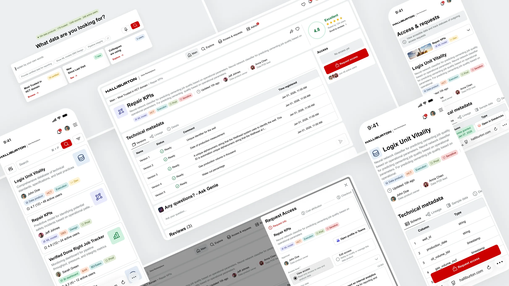
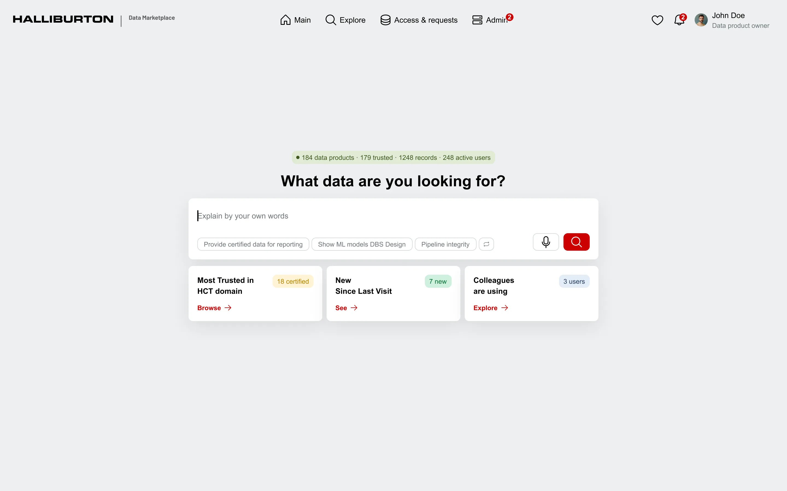

Data Marketplace
Shipping Halliburton's first unified data platform through an AI-native design-to-code pipeline.
The first tool at Halliburton where engineers can find, trust, and access any data asset in minutes.

01 · From weeks of searching to minutes of finding
Problem & Context
Problem
Scattered and unfindable
Data assets live across disconnected systems with inconsistent metadata and unclear ownership.
Goal
One entry point
A unified marketplace for curated data, reports, models, and AI agents — part of Halliburton's Data Ribbon.
Success
Minutes, not weeks
Engineers find, validate, and request access to any data asset in under a few minutes.
02 · From vision to shipped product
Roadmap
1.0
Discovery
Aligned with the Technology Director and AI lead on vision, then split the work into two phases — MVP and Trust/AI — so the design system could scale without rework.
2 strategies · 1 foundation2.0
Research
Mapped 4 persona groups, 5 user flows, user journey maps, and the information architecture that later powered the MCP hand-off.
4 personas · 5 flows · IA3.0
Prototype & Design System
Started with AI-generated prototypes to validate structure fast, then built a scalable design system with reusable tokens and components.
AI prototype · Figma system4.0
Usability testing
Two rounds of testing with real users — Data POD Leads and Product Owners. Caught blind spots before a single line of code was written.
2 rounds · 10 users5.0
Hand-off to Dev
Connected dev team to Figma through an MCP server. Developers pulled specs, tokens, and components directly into their IDE — no screenshots, no outdated docs.
Figma MCP · live specs6.0
Post-launch Research
Tracked adoption, task success, and friction points after launch. The platform keeps evolving based on real usage data.
Analytics · iteration03 · Two phases of product evolution
UX Strategy
Phase 1 built the foundation — one marketplace to find, trust, and access any data asset. Structure and core workflows first; AI and social came later.
01
Vision & Problem
- Vision
- Provide a user-friendly means of accessing curated, trusted data, reports, models, and AI Agents that are a part of Halliburton's Data Ribbon.
- Problem
- Users cannot efficiently work with data because it is difficult to find, difficult to access, and not easy to compare across multiple sources.
- Success looks like
- Data engineers use the dashboard daily as the primary entry point to find, validate, request access, and consume data assets within minutes — not days or weeks.
02
Persona groups
- G1 · Data Scientist / Engineer Browse data products, fast and relevant search, preview data, request & obtain access quickly.
- G2 · Business User Find existing reports across BI tools that answer questions from trusted data.
- G3 · Data Product Owner Manage data product info, approve/reject accesses, define level of access.
- G4 · Data POD Lead Oversee data products across teams, monitor quality and access patterns.
03
UX Goals
- Help users find the right data product quickly
- Make data product cards and details easy to understand
- Simplify the access request flow
- Make access statuses and permissions clear
- Differentiate View and Edit access levels clearly
- Enable product owners to add and manage products with minimal friction
04
Business Goals
NDA
05
UX KPI
- Efficiency — reduce
-
- Search time — from weeks to under 5 minutes
- Access request time — from months to days
- Adoption — increase
-
- Engineers actively using the marketplace
- Data products onboarded
- Repeat usage rate
- Quality & satisfaction — increase
-
- User satisfaction score (CSAT)
- Users who find the right product on first search
06
Core user scenarios
- Search and discover relevant data products
- Filter and narrow down data products
- Open dataset detail page and understand if it's usable
- Request and get 1-click access directly from dataset page
- Track access request status
- Compare data sets
- Add and manage data products
- Manage access levels
07
Key features
NDA
08
UX Principles
- Reduce cognitive load — engineers already drown in data; the UI shouldn't add noise.
- Trust over decoration — every element earns its place; metadata, status, and lineage come first.
- Speed as a feature — every flow optimized for “minutes, not weeks.”
- Desktop-first — users live in multi-window data environments.
09
Key deliverables
- UX strategy for 2 product phases
- Personas (4 groups)
- User journey maps
- Jobs-to-be-done
- User flows (5 flows)
- Wireframes and mockups
- Interactive prototype
- Scalable design system
- 2 rounds of usability testing reports
- Post-launch research report
Phase 2 turns browsing into AI-powered discovery. Users describe what they need in plain language and get ranked, trustworthy results.
01
Vision & Problem
- Vision
- Transform the Data Marketplace from a browsing tool into an intelligent, trust-driven data discovery platform powered by AI.
- Problem
- Users can find data but cannot judge if it's reliable, relevant, or safe to use. Discovery is manual, trust signals are absent, and social knowledge is invisible.
- Success looks like
- Engineers and business users describe what they need in plain language, receive ranked trusted results in seconds, and make access decisions confidently.
02
Structural changes
- Phase 1 → 2
- The existing browse experience moves to a secondary role. A new AI-powered entry point takes its place — built around intent rather than navigation.
03
UX Goals
- Reduce time to find the right data product from weeks to minutes
- Give users confidence to trust data before requesting access
- Make approval decisions faster for owners
- Surface peer knowledge that currently lives only in people's heads
- Support both technical and business user journeys
04
AI capabilities
NDA
05
Feature clusters
NDA
06
UX KPI
NDA
04 · Understanding users and their journeys
Research
4 persona groups, user flows, and end-to-end journey maps shaped every design decision.
Users
Creators & Approvers
Data Scientist / Engineer
| Who | Technical specialist working with Python, ML models, and data integrations. |
|---|---|
| Pain | Hard to find datasets across sources; long approval cycles; unclear ownership. |
Business User
| Who | Analysts, PMs, and business stakeholders using BI tools. |
|---|---|
| Pain | Too much raw data, too few curated business-ready reports; hard to trust freshness. |
Data Product Owner
| Who | Product manager responsible for governance and lifecycle of data products. |
|---|---|
| Pain | Fragmented ownership; too many manual approval steps; slow onboarding. |
Data POD Lead
| Who | Team/Tech Lead for a data engineering POD or domain. |
|---|---|
| Pain | Heavy manual documentation work; poor visibility into who uses their products. |
05 · From AI brainstorm to production-ready screens
Prototype & Design System
Instead of pixel-perfect mockups, I started with an AI prototype to test concepts and layouts before investing in high-fidelity design.
Once the structure was proven, I built a scalable design system — reusable components, tokens, and patterns — then the final mockups for the dev team.

AI-powered home page with natural language search and personalized recommendations
Three-tier token architecture
One system, two themes, zero duplication. Every color flows through three layers — primitives, semantic tokens that swap for light/dark, and component tokens.
~158 primitive · ~45 semantic · ~459 component tokens across 2 themes.
06 · Testing with the people who'd actually use it
Usability testing
Before moving to development, I ran two structured feedback sessions with the primary user groups — validating designs, aligning on roles and workflows, and catching blind spots early.
Session 1 — Data POD Leads
Design review with Data POD Leads — the technical owners who create and maintain data products. Validated roles, publishing workflows, and access management.
Key takeaways
- Overall Marketplace concept is supported
- Clear separation between POD Lead and Data Product Owner responsibilities
- Automation-first approach validated
- Access management should be user-centric
- Sensitivity column removed from UI
- Dev access management remains an open exploration topic
Session 2 — Data Product Owners
Design review with Data Product Owners — the business owners responsible for final approval and publication. Validated publication flow, access governance, and role alignment.
Key takeaways
- Overall Marketplace concept is supported
- Clear separation between technical and business ownership
- Access management should be user-centric with clear access reasons
- Publication and access decisions should stay lightweight
- Marketplace enables confident decisions without exposing technical complexity
07 · AI-powered design-to-code pipeline
Hand-off to Dev
Traditional hand-off means screenshots, redlines, and a PDF that's outdated the moment you save it. Instead, I connected developers directly to the Figma design system through MCP (Model Context Protocol) — they pulled specs, tokens, and interaction states straight into their IDE in real time.
How it flows
08 · Launch isn't the finish line — measuring what's next
Post-launch Research
The platform is in active use while testing continues. Rather than waiting to measure success, I designed the post-launch research program upfront — combining analytics, AI-powered tools, and continuous user feedback.
01
What we'll measure
- Adoption
- Active users, onboarding completion rates, and frequency of return visits across all persona groups.
- Task success
- Time-to-find for datasets, search-to-access conversion, and first-attempt success rate for access requests.
- Satisfaction
- In-product micro-surveys and follow-up interviews triggered by key user actions.
- Pain points
- Friction identified through AI-summarized session replays, support tickets, and heatmap analysis.
02
Modern research stack
- Analytics copilot
- Natural language queries across usage data to spot trends and cohorts faster than manual dashboards.
- AI session replay
- LLM-generated insights from user sessions instead of watching hundreds of recordings manually.
- Continuous interviews
- Weekly short conversations with real users, built into the process rather than run as one-off studies.
- Feedback synthesis
- Combining survey responses, support tickets, and interviews into themed insights automatically via LLM synthesis.
03
Feedback-driven iteration
- Listen
- Collect feedback through multiple channels — surveys, session replays, interviews, and support tickets.
- Synthesize
- Theme the findings and prioritize by impact on user tasks and business goals.
- Ship
- Iterate on the most critical friction points in fast, focused cycles.
- Validate
- Re-measure to confirm the change actually moved the metric.
09 · Built, validated, in active use
Outcome
The platform is built, validated with real users, and in active use while testing continues.
Already in place: a three-tier design system, dev-integrated MCP pipeline, two-phase UX strategy, two rounds of stakeholder validation, and a Figma-to-code workflow producing components 1:1 with the design system.
10 · What I learned along the way
Reflection
What I'd do differently
Involve data governance stakeholders earlier in the process. Their requirements only became clear mid-project, which meant reworking parts of the access request flow that were already in motion.
What this project taught me
Leading a project end-to-end as the only designer taught me seniority isn't about headcount — it's about owning decisions across the whole stack. AI in design isn't magic, it's leverage: it speeds up what you already understand and is useless for what you don't. The best outcomes came when I knew exactly what I wanted before asking.
What I'm taking forward
The Figma + MCP pipeline is going into every project from here. Once you've shipped components 1:1 with the design system on the first pass, traditional hand-off feels broken.